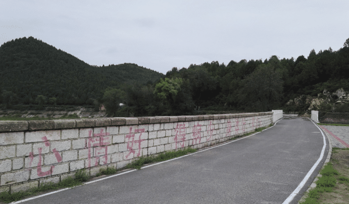

雁栖湖：从名字上我们得知这是大雁会去的地方，已经和成为和其他鸟类的集散地，每年秋天和春天的时候，羽毛迎面铺满湖面。湖面放眼望去，看上去让人感觉环境很优美，除过风景之外有很多的娱乐项目，比如大家喜欢的空中飞行，水降落伞，攀岩等，这些都是年轻人比较喜欢的项目，玩起来特别的刺激。当然如果你喜欢玩游戏，一定要记得感受一下，周围环境的秀丽。
宽窄巷子:首先这里是免费的，不管什么时候去都可以，里面有各种各样的店铺，各种各样的建筑，相比于井里的巷子，宽窄巷子更加具有复古的气息，颇有古声，古色文艺感觉。不少人说这里最大的特色变成吃，确实比锦鲤的好吃的还要多，虽然里面的店铺可能长相很相似，但是作为一个现代人对于这里的文化还是比较喜欢的，基本上四川的小吃全部容纳在其中。

唐指山风景区：作为当地非常著名的景点，同样是旅游爱好者，特别爱打卡的地方不少。登山爱好者每次会前往，这里是个最佳的选择，不仅有青山，同时有湖泊环绕着，现在已经到湖泊上面修建了很多的水上游乐项目，可以供游客们游玩。湖泊周围有十分丰富的植被覆盖，基本上大家感觉不到夏天的炎热，如果渴了可以直接舀一勺清泉的池水来解渴，这样的景观特别适合大家夏天时避暑使用。